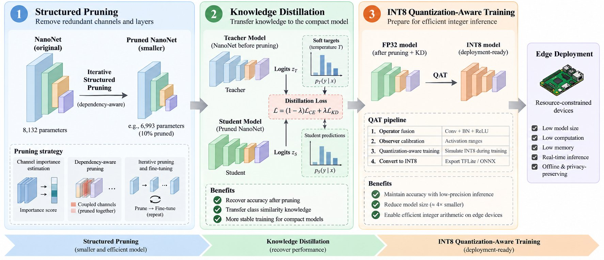
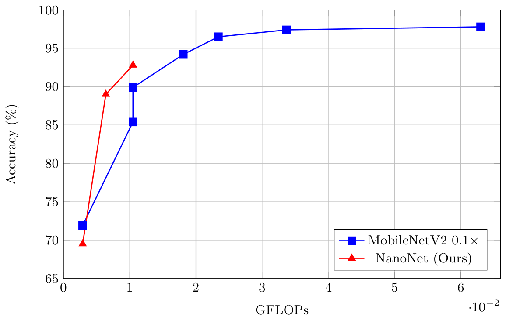
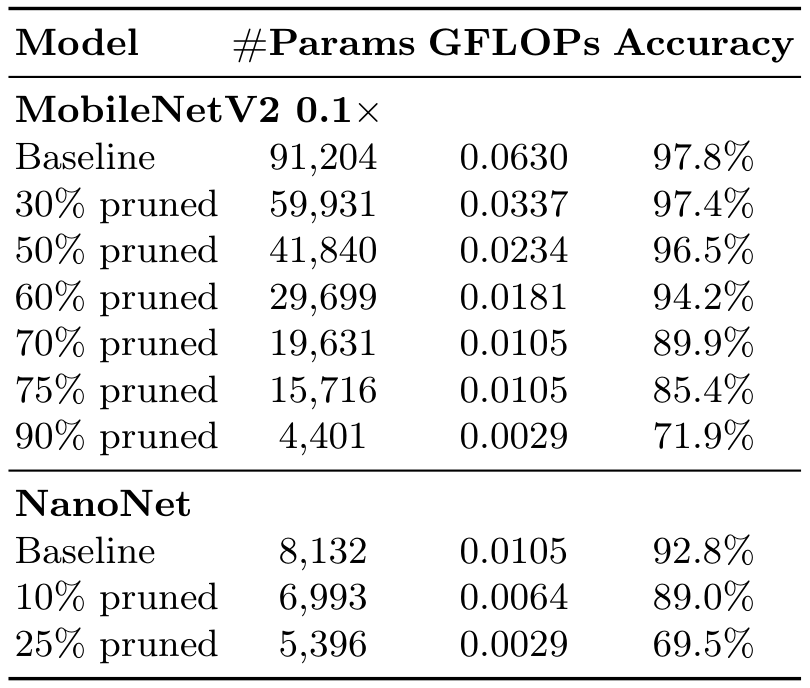

Automated brain tumor classification from magnetic resonance imaging (MRI) can support accessible medical image analysis, but conventional deep learning models often exceed the resource budgets of highly constrained edge-AI platforms. We present NanoNet, an ultra-lightweight convolutional neural network designed for resource-constrained MRI classification and motivated by future edge-AI applications. Inspired by MobileNetV2, NanoNet substantially reduces network depth, channel capacity, expansion ratios, and final feature dimensionality, resulting in only five inverted residual blocks and 8,132 parameters. We further investigate dependency-aware structured pruning, knowledge distillation, and INT8 quantization-aware training for additional compression.
Experiments on the BRISC 2025 benchmark show that NanoNet achieves 92.8% accuracy with 8,132 parameters and 0.0105 GFLOPs. At the same computational cost, it outperforms 70%-pruned MobileNetV2 by 2.9 percentage points while using 58.6% fewer parameters.
Its INT8 TensorFlow Lite model requires only 27.7 KB of storage, demonstrating strong potential for future edge-AI deployment.
NanoNet is progressively compressed through dependency-aware structured pruning, knowledge-distillation-based fine-tuning, and INT8 quantization-aware training. The original NanoNet serves as the teacher during pruning and fine-tuning, and the resulting models are converted to INT8 for deployment-oriented resource evaluation.

The plot compares accuracy with computational cost for MobileNetV2 0.1× and NanoNet across pruning configurations. NanoNet’s baseline reaches 92.8% accuracy at 0.0105 GFLOPs; its 10% and 25% pruned variants reach 89.0% and 69.5% at 0.0064 and 0.0029 GFLOPs.


MobileNetV2 0.1× reaches 97.8% FP32 accuracy at 0.0630 GFLOPs, while baseline NanoNet reaches 92.8% at 0.0105 GFLOPs with 8,132 parameters. At the same reported computational cost, NanoNet exceeds 70%-pruned MobileNetV2 by 2.9 percentage points and uses 58.6% fewer parameters; after INT8 conversion, baseline NanoNet records 90.1% accuracy.
| Model | Peak Tensor Arena (KB) | Model Storage (KB) |
|---|---|---|
| MobileNetV2 | 0.1× | |
| 70% Pruned | 333.4 | 81.4 |
| 60% Pruned | 333.4 | 103.0 |
| NanoNet | ||
| Baseline | 394.6 | 27.7 |
| 10% Pruned | 382.4 | 27.6 |
Baseline NanoNet has a 27.7 KB INT8 model file, compared with 81.4 KB and 103.0 KB for the selected 70%- and 60%-pruned MobileNetV2 models. Its peak Tensor Arena use is 394.6 KB, higher than the 333.4 KB reported for those MobileNetV2 variants, so the smallest stored model does not have the lowest runtime activation memory.
@misc{nguyennanonet,
author = {Nguyen, Le-Tran and Huynh, Huu-Thuan and Tran, Minh-Triet and Le, Trung-Nghia},
title = {NanoNet: Ultra-Lightweight Network for MRI Brain Tumor Classification toward Edge AI},
}